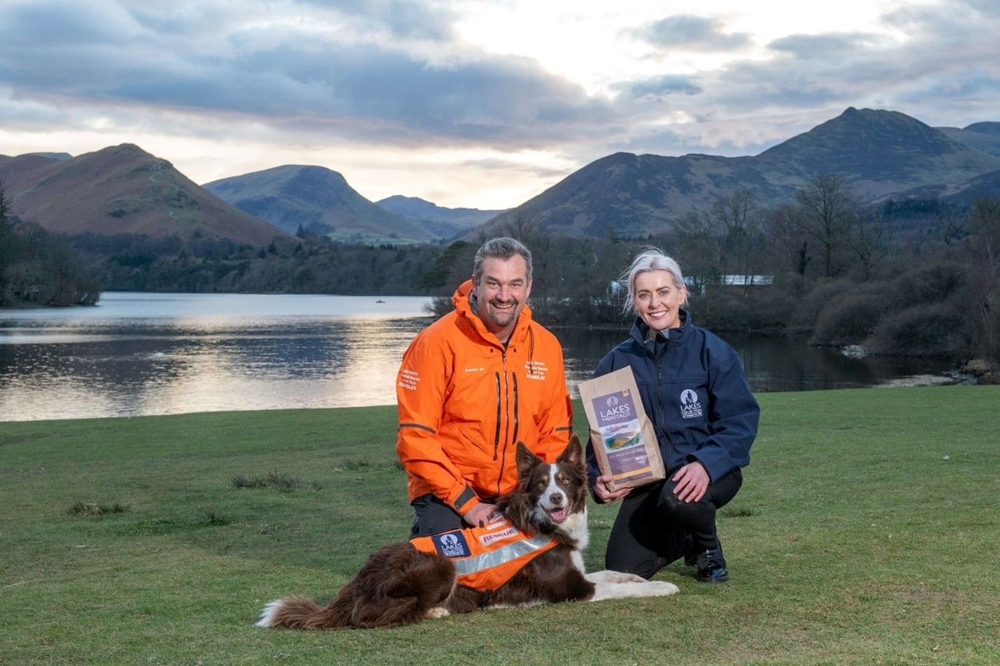

Pet food brand inspired by Lake District launches partnership with mountain rescue charity
The Lakes Collection has launched a long-term partnership with the Lake District Mountain Rescue Search Dogs Association (LDMRSDA), which operates specialist dog teams across the region to search for people missing on the fells.

As part of the five-year sponsorship deal, the search dogs will get free food from the Lakes Collection range, as well as additional benefits for operational team members and support with the charity’s fundraising activities.
The Lakes Collection is part of WCF Pet & Equestrian, a specialist pet food retailer which operates eight stores across the North of England and south-west Scotland and has long-standing links with Cumbria and the Lake District.
Jade Earley, General Manager of WCF Pet & Equestrian, said: “We are delighted to be working alongside the Association to support the essential life-saving work they do in the Lake District and beyond. The Lakes Collection range is inspired by our roots in Cumbria and the Lake District, which date back more than 100 years, so linking up with the Association is a perfect fit for us. The search dogs are true Lake District heroes and we hope through our partnership we can give something back in recognition of the brilliant work they do.”
The LDMRSDA is made up of eight teams of search dogs and their handlers, with four more dog teams currently in training. All handlers are members of Cumbrian mountain rescue teams and are deployed with their dogs when their specialist search skills are required.
The Association is made up entirely of volunteers and costs around £60,000 per year to run. Based in Keswick, it has around 80 members including the dog teams, training assessors, and dogsbodies, who play a vital role in training exercises by lying out on the fells waiting to be discovered by the dogs.
Rob Grange, chair of LDMRSDA, said: “The work we do is crucial in situations where someone is lost on the fells and needs to be found quickly. A search dog can cover the same area that it would take around 40 people to cover. The costs associated with training and deploying search dogs can be significant and, as a charity which relies entirely on donations, securing this partnership is a huge boost for us in terms of support and in raising the awareness of what we do. Working with a local company which shares our love of dogs and the Lake District is the perfect combination for us.”
Our Lakes Collection dry dog food range is made in the UK from responsibly sourced ingredients. All four products in the range are high in quality protein and contain naturally sourced vitamins and minerals with no artificial colours or preservatives.
Press Links
- News and Star
- In Cumbria
- Yorkshire Times
- Companion Life
- North East Post
- Cumbria 24
- Bdaily
- Good News Post
- All Paws Industry
- Pet Gazette

< Previous Article Dedicated app boosts guest experience at award-winning campsites